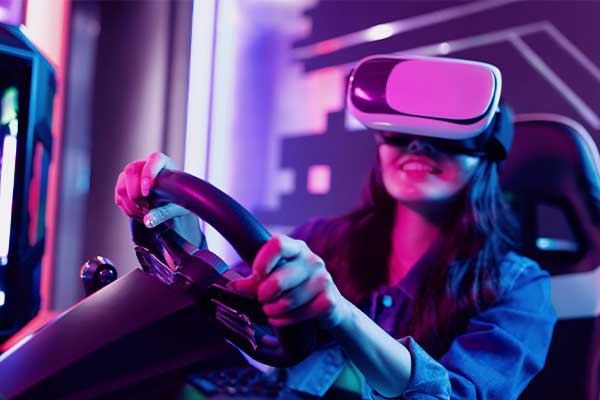
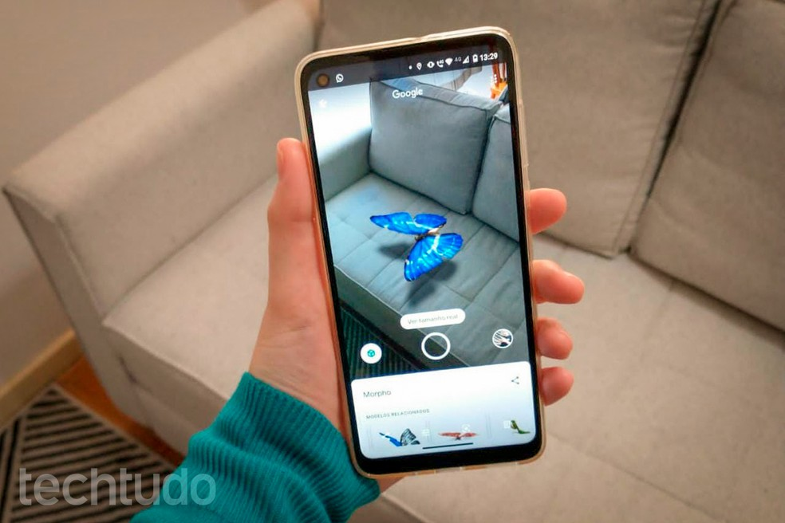
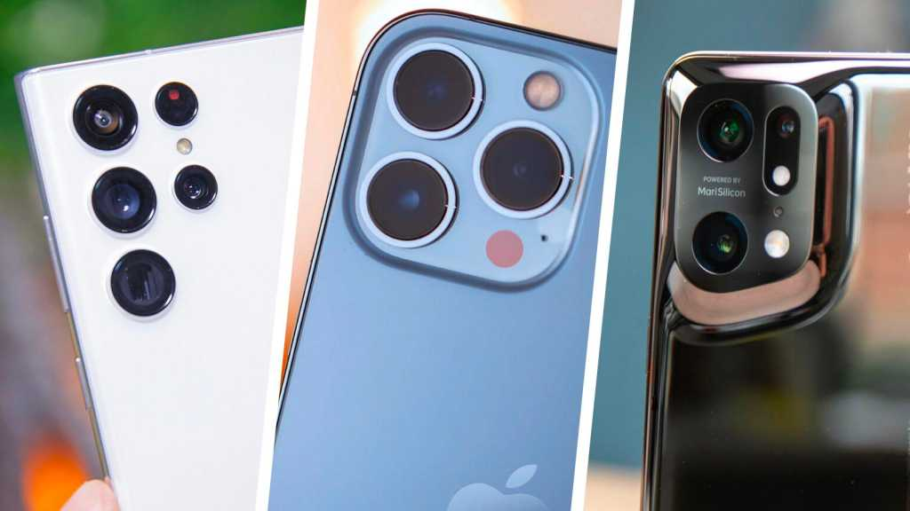

A Realidade Virtual (RV) é um ambiente gerado por meio de um computador com cenas e objetos que parecem reais, fazendo com que os usuários se sintam imersos nessa realidade. Esse ambiente é percebido através de um óculos ou capacete de Realidade Virtual.

A Realidade Aumentada (RA) é uma tecnologia que permite sobrepor elementos virtuais à nossa visão da realidade. o que a RA faz é adicionar elementos virtuais (informações adicionais em forma de gráficos ou imagens) em nosso ambiente real.

São considerados a evolução dos celulares por trazerem recursos mais avançados que necessitam de sistemas operacionais para desempenhar as tarefas nos aparelhos. Podem ser considerados "computadores de bolso" por permitir a realização das mesmas atividades dos computadores. Exemplo: os sistema android passou a ser utilizado no final do ano de 2008.